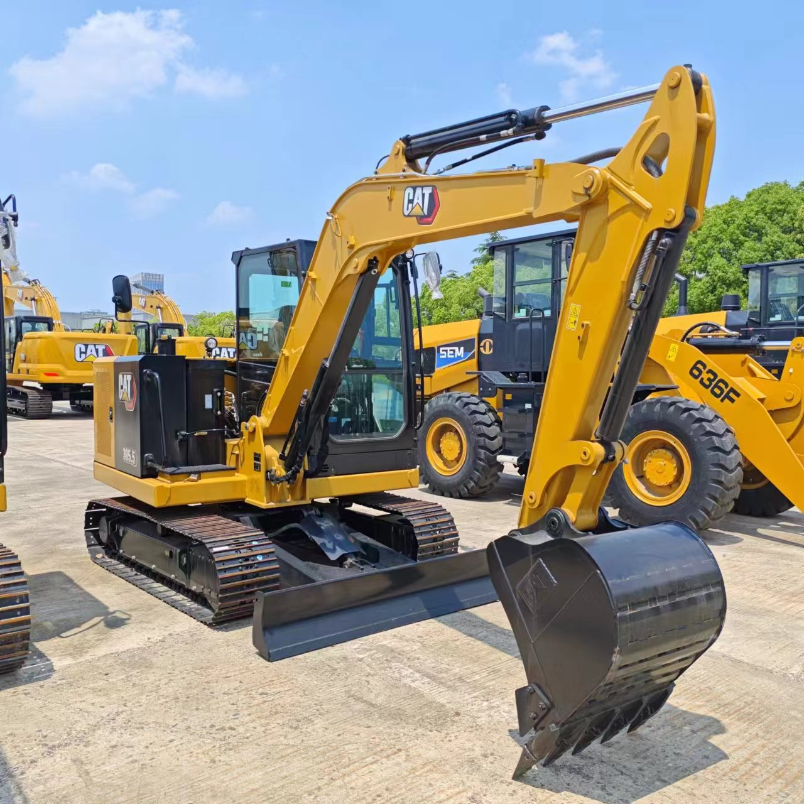

Refurbished Caterpillar Cat 305.5 Excavator
The Caterpillar Cat 305.5 Excavator is a compact, versatile machine designed for a range of applications in construction, landscaping, and utility work. Known for its robust hydraulics, high fuel efficiency, and compact size, the Cat 305.5 excels in tight spaces while maintaining exceptional performance. For businesses looking for an affordable yet reliable option, a refurbished Cat 305.5 offers the same outstanding capabilities as a new model but at a fraction of the cost, making it a smart investment for operators seeking long-term value without sacrificing quality.
Honestly, it's almost impossible to buy a brand new excavator from China. They either don't exist or are made in China. If a Chinese seller tells you their Caterpillar/Komatsu/Volvo/Kobelco/Hitachi is brand new, they're lying. Therefore, a refurbished excavator is your best bet.

Here are the detailed specifications for a refurbished Caterpillar Cat 305.5E2 CR excavator:
Operating Weight and Dimensions
- Operating Weight: ~5,300–5,500 kg
- Transport Length: ~5.5–5.7 meters
- Transport Width: ~1.98 meters
- Transport Height: ~2.55 meters
- Tail Swing Radius: ~1.5 meters (compact radius design)
- Track Width: 400 mm standard
- Undercarriage: Fixed gauge or variable gauge depending on variant
Engine and Powertrain
- Engine Model: Cat C2.4 (Tier 4 Final / EU Stage V compliant)
- Rated Power Output: ~33.6 kW (45 hp) @ 2,200 rpm
- Fuel Tank Capacity: ~70–80 liters
- Travel Speed: 2.8–4.8 km/h
- Swing Speed: ~10 rpm
- Drive Type: Hydrostatic with planetary final drives
Hydraulic System
- Main Pump Type: Load-sensing, variable displacement piston pumps
- Flow Rate: ~2 × 100–110 L/min
- System Pressure: Up to 24–28 MPa
- Hydraulic Oil Capacity: ~60–70 liters
- Efficiency Features:
- Boom/swing priority
- Regeneration circuits
- Auto hydraulic warm-up
Performance Metrics
- Bucket Capacity: 0.18–0.25 m³ (SAE heaped)
- Max Digging Depth: ~3.7–3.9 meters
- Max Reach (Horizontal): ~5.9–6.2 meters
- Max Dump Height: ~3.9–4.2 meters
- Bucket Digging Force: ~45–50 kN
- Arm Digging Force: ~30–35 kN
Cab and Operator Features
- Cab Type: ROPS/FOPS certified
- Display: LCD monitor with diagnostics and fuel tracking
- Controls: Pilot-operated joysticks with auxiliary hydraulic circuit
- Comfort: Adjustable seat, optional HVAC, low-noise cab
- Visibility: Wide glass area, LED work lights
Smart Features and Efficiency
- Fuel Efficiency:
- Auto idle and engine shutdown
- ECO mode
- Emissions Control:
- DOC + DPF + SCR (Tier 4 Final)
- Transportability: Easily trailerable under 6-ton class
Attachments Compatibility
- Standard Bucket: 0.18–0.25 m³
- Optional Tools: Hydraulic breaker, auger, compactor, ripper
- Quick Coupler: Manual or hydraulic options available
Refurbishment Scope
Refurbished Cat 305.5 units typically include:
- Engine Overhaul: Turbocharger, injectors, cooling system
- Hydraulic Restoration: Pump recalibration, valve block testing, hose replacement
- Electrical Diagnostics: Monitor, sensors, wiring harness
- Cab Reconditioning: Seat, joysticks, HVAC, repainting
- Structural Repairs: Boom/bucket welding, bushing replacement, undercarriage rebuild
Overview of the Caterpillar Cat 305.5 Excavator
The Caterpillar Cat 305.5 is a mid-sized, tracked hydraulic excavator designed for maximum versatility and efficiency. Whether working in urban environments, residential landscaping, or smaller construction sites, the Cat 305.5’s compact design allows it to operate effectively in confined spaces, all while offering impressive digging depth and reach. This makes the Cat 305.5 a valuable tool for excavation, grading, trenching, and other heavy-duty tasks.
A refurbished Cat 305.5 undergoes a thorough reconditioning process to restore it to factory specifications. Worn components are replaced with genuine Caterpillar parts, ensuring that the machine operates like new, but at a more affordable price point.
Key Specifications of the Caterpillar Cat 305.5 Excavator
The Cat 305.5 is built to handle a variety of tasks with precision and power. Here are the key specifications:
-
Operating Weight: Approximately 5,400 - 6,000 kg (11,900 - 13,200 lbs)
-
Engine Power: 40 - 60 hp (30 - 45 kW)
-
Max Digging Depth: Up to 4.7 meters (15.4 feet)
-
Maximum Reach: 6.3 meters (20.7 feet)
-
Bucket Capacity: Typically 0.2 - 0.4 cubic meters (7 - 14 cubic feet)
-
Fuel Tank Capacity: 80 - 100 liters (21 - 26 gallons)
-
Travel Speed: Up to 5.5 km/h (3.4 mph)
These specifications allow the Cat 305.5 to perform efficiently on a wide range of tasks, from digging and trenching to lifting and material handling.
Performance and Efficiency of the Cat 305.5
The Caterpillar Cat 305.5 Excavator is engineered to deliver exceptional performance while maintaining fuel efficiency. Its robust hydraulic system and fuel-efficient engine make it an excellent choice for operators who need a machine that can tackle tough jobs without breaking the bank on fuel costs.
Performance Highlights:
-
Efficient Hydraulics: The Cat 305.5 is equipped with a high-performance hydraulic system, which enables smooth operation and precise control over the boom, arm, and bucket. This helps increase productivity, especially when working with heavy materials or in challenging digging conditions.
-
Fuel Efficiency: Designed for reduced fuel consumption, the Cat 305.5 is built to maximize efficiency without sacrificing power. This allows operators to get more done on a single tank of fuel, resulting in lower operational costs over time.
-
Digging and Lifting Power: Despite its compact size, the Cat 305.5 provides impressive digging depth and reach, making it highly effective for tasks like trenching, foundation work, and lifting materials. The machine’s powerful hydraulics and engine allow it to handle demanding tasks with ease.
-
Precision Control: The responsive controls and ergonomic cabin design offer excellent maneuverability, making the Cat 305.5 a great choice for working in tight spaces or performing delicate tasks. Operators can achieve precise results even in challenging environments.
Durability and Longevity of the Cat 305.5
Caterpillar equipment is renowned for its durability and long-lasting performance, and the Cat 305.5 is no exception. Built with high-quality materials and designed for tough working conditions, this machine can deliver reliable performance for years, even under the harshest conditions.
Durability Features:
-
Reinforced Undercarriage: The undercarriage of the Cat 305.5 is designed to endure rugged terrain and heavy usage. With durable tracks, sprockets, and rollers, the undercarriage ensures stability and smooth operation, even on uneven surfaces.
-
Long-Lasting Engine: The Cat 305.5 is powered by a reliable engine designed for longevity. With regular maintenance, the engine can provide thousands of hours of dependable service, making it a valuable long-term asset for any business.
-
Durable Hydraulic System: The hydraulic components of the Cat 305.5 are designed to withstand high pressures and frequent use. With proper care, the hydraulic system can deliver consistent performance and reduce the risk of breakdowns.
Comfort and Safety of the Cat 305.5
Operator comfort and safety are key considerations in the design of the Cat 305.5. The machine is equipped with an ergonomic cabin, noise reduction features, and several safety enhancements to ensure that the operator remains comfortable and protected during long shifts.
Comfort and Safety Features:
-
Spacious Cabin: The Cat 305.5 offers a spacious, operator-friendly cabin with adjustable seating and intuitive controls. This helps reduce operator fatigue, allowing for more productive work hours, even during long shifts.
-
Noise and Vibration Reduction: The cabin features noise and vibration reduction technology that enhances operator comfort. These features help reduce distractions and maintain focus, making the work environment more pleasant, especially during long workdays.
-
Safety Features: The Cat 305.5 includes several built-in safety features, such as Roll Over Protection (ROPS) and Falling Object Protection (FOPS), to protect the operator in hazardous work environments. The low center of gravity and stable design also contribute to safety, especially on uneven terrain.
Versatility and Attachments for the Cat 305.5
The Cat 305.5 is a highly versatile machine that can be outfitted with a variety of attachments to handle different tasks. Whether you’re digging, grading, lifting, or demolishing, the Cat 305.5 can be equipped with the right tool for the job.
Common Attachments for the Cat 305.5:
-
Buckets: The Cat 305.5 can be fitted with various buckets, including general-purpose, heavy-duty, and grading buckets. Bucket capacities typically range from 0.2 to 0.4 cubic meters (7 - 14 cubic feet), making them perfect for different material handling applications.
-
Hydraulic Breakers: For demolition tasks, the Cat 305.5 can be equipped with a hydraulic breaker attachment, allowing the machine to break concrete, rock, and other tough materials with ease.
-
Augers: The Cat 305.5 can be fitted with auger attachments, perfect for digging precise, deep holes for foundations, posts, or other applications that require accurate hole placement.
-
Grapples: For material handling, the Cat 305.5 can be equipped with grapple attachments, allowing the machine to lift and move logs, debris, and scrap metal.
-
Quick Couplers: Quick couplers enable operators to switch between different attachments rapidly, reducing downtime and increasing overall productivity.
Benefits of Purchasing a Refurbished Caterpillar Cat 305.5 Excavator
Purchasing a refurbished Cat 305.5 offers several advantages, particularly for businesses that need to balance budget constraints with the desire for high-quality equipment.
Key Benefits:
-
Cost Savings: Refurbished Cat 305.5 excavators are significantly more affordable than new models, making them an excellent choice for businesses that need reliable equipment without the high cost of a new machine.
-
Thorough Reconditioning: A refurbished Cat 305.5 undergoes a comprehensive inspection and reconditioning process, with all worn parts replaced by genuine Caterpillar components. This ensures that the machine performs like new and is ready to deliver optimal results.
-
Warranty: Many refurbished units come with a warranty, providing peace of mind to buyers and ensuring that their investment is protected in case of unexpected issues.
-
Sustainability: Purchasing refurbished equipment is an environmentally friendly choice, as it helps reduce waste and extends the life of existing machinery. This contributes to sustainability in the construction and heavy equipment industries.
Maintenance Tips for the Caterpillar Cat 305.5 Excavator
To ensure the Cat 305.5 continues to deliver reliable performance, regular maintenance is crucial. By following a proactive maintenance schedule, you can minimize downtime and keep the machine in top condition.
Maintenance Recommendations:
-
Engine Maintenance: Regularly check and change the engine oil, replace air filters, and monitor coolant levels to keep the engine running smoothly and prevent overheating.
-
Hydraulic System: Inspect hydraulic hoses for leaks and replace hydraulic filters as necessary. Keeping the hydraulic system clean and in good working order ensures efficient operation.
-
Undercarriage: Inspect the undercarriage for wear, especially the tracks, sprockets, and rollers. Timely replacement of damaged components will help avoid further issues and ensure smooth operation.
-
Attachments: Regularly inspect attachments such as buckets, grapples, and augers for wear and tear. Replace or repair damaged parts to maintain attachment functionality and overall productivity.
Conclusion
The Caterpillar Cat 305.5 Excavator is a reliable, compact machine that offers excellent performance, fuel efficiency, and versatility. A refurbished Cat 305.5 provides a cost-effective alternative to buying a new machine while still delivering the same high-quality performance and durability. With proper maintenance, the Cat 305.5 can continue to serve operators for many years, making it a smart investment for any business in need of efficient and reliable excavation equipment. Whether you're working in tight spaces, handling materials, or performing demolition, the Cat 305.5 is up to the challenge.
Our Commitment
- 2 years / 4000 hours warranty.
- EPA certified.
- No sweatshop labor.
Contacts

- [email protected]
- Youtube Instagram Facebook
- Navigation: G206 (Sishu Bridge) in Changfeng County, Hefei City, Anhui Province, 200 meters north to the east